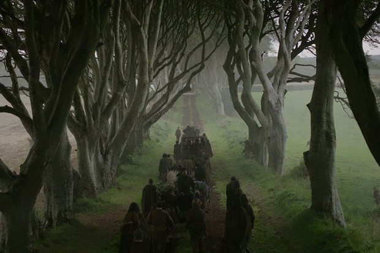
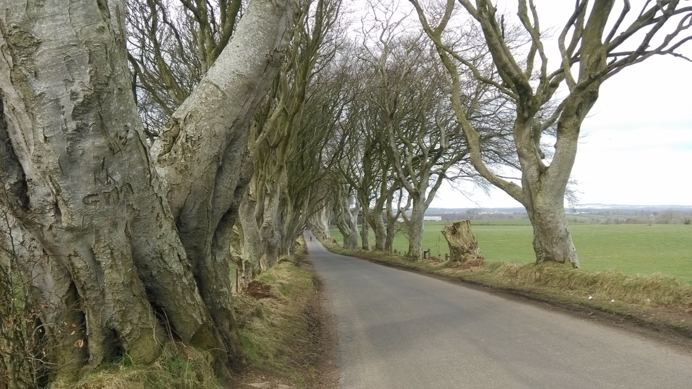
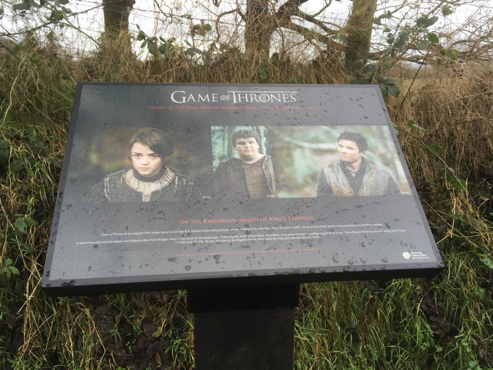
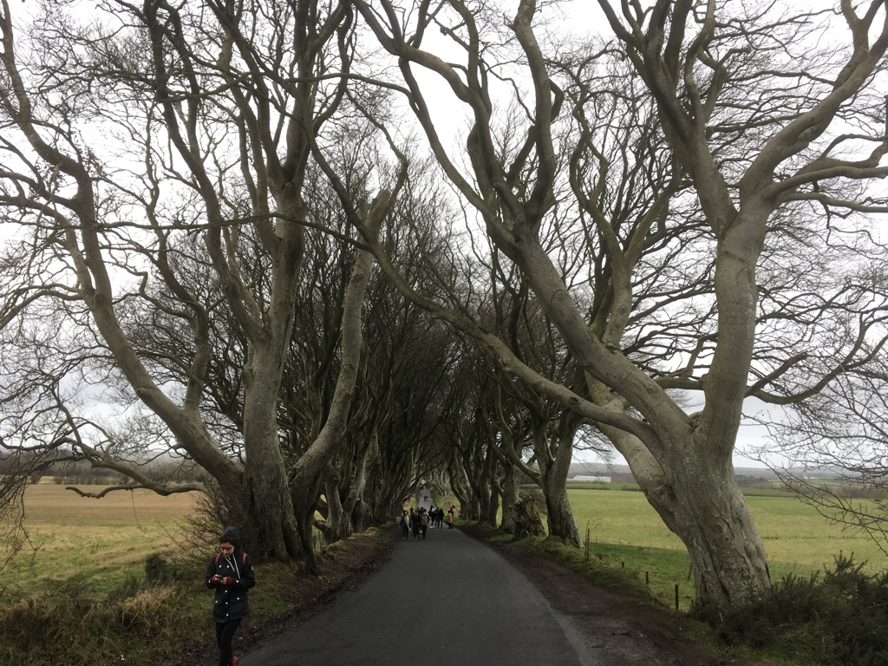
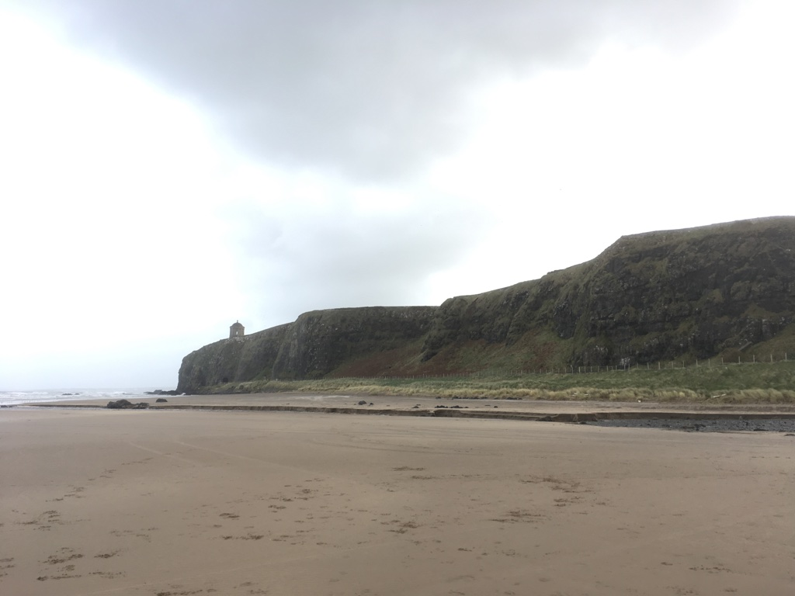
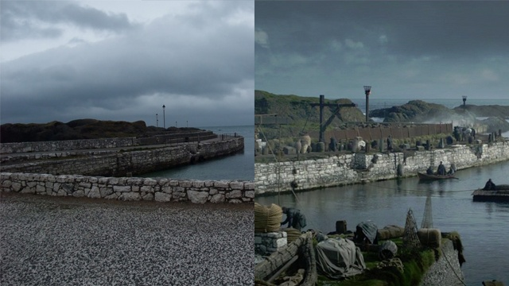
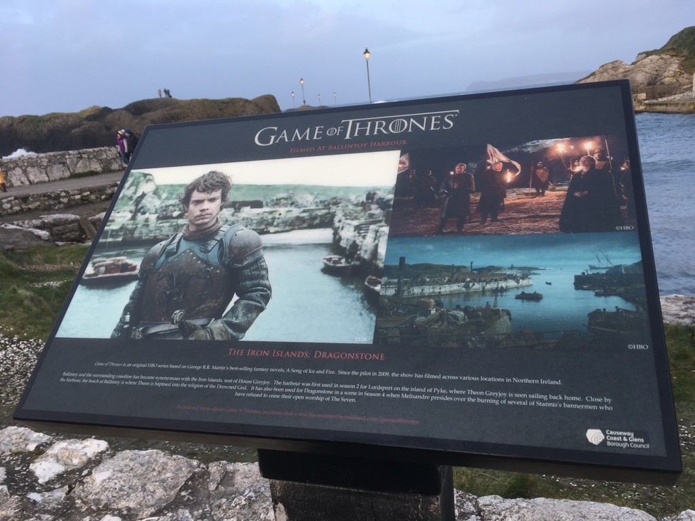
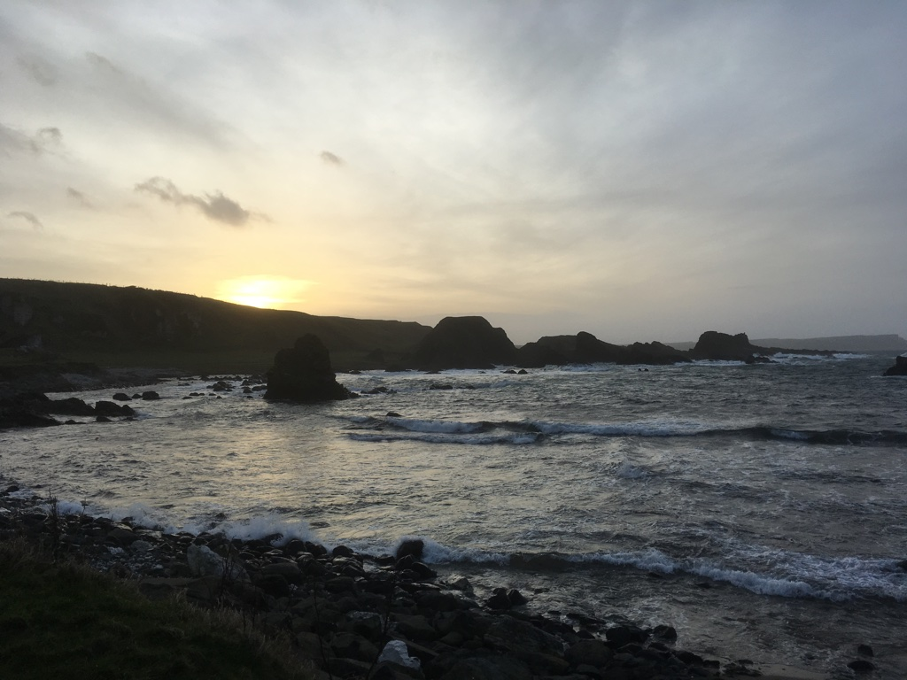
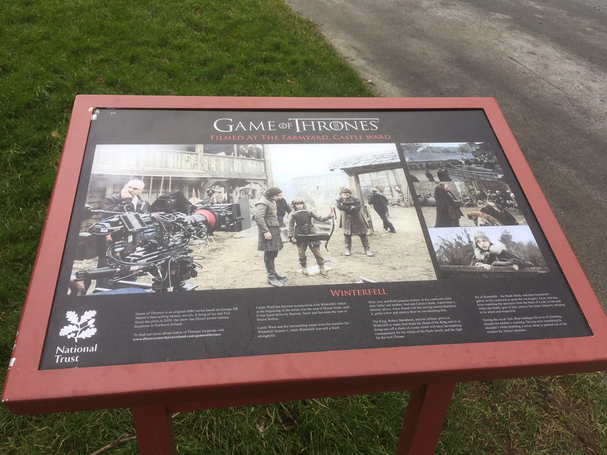

In the beginning
This article is probably my first travelling blog which I wished to write something about travelling for a long time.
To be honest, I don’t have many personal favourite habits except for driving, travelling and watching films. I’m also not a big fan of series as they are sometimes too long to finish, taking me so much time. So far, I only watched two series entirely. One is BBC - Sherlock Holmes, the other is HBO - Game of Thrones (GOT). And GOT probably is the longest series I still insisted to finish as highly recommended by Diarmuid and Brenny.
I still remember it was in 2016, summer time. My first Annual Holiday after starting my career. I aggressively started from Season 1, only spent 2 weeks to catch up until Season 6. Since that time, I become a loyal fan of GOT, as the same feeling to Sherlock Holmes.
Before start
To be honest, it’s a little bit rushed and not well-thinking when I made this decision. Actually it does cause quite “serious” trouble - My GF was pissed off! I know it’s not her fault and she cared about me, just worried about my safety. Anyway, the decision I made was -
Driving all the way from Limerick to Belfast, on my own, late in the evening and the weather was shit as always in the winter!
On the way to Belfast
On Friday evening, I hired a car from Enterprise. However, when I got the car, it’s actually 6.30 p.m. As you know, in the winter time, the sky always became dark quite early. So when I really started from my home, it’s already 7.05 p.m.
First trouble in the motorway
In the first half an hour, everything was fine and I filled in enough fuel to my car and listened music. While driving on the M7, near M7 Toll station, suddenly, a yellow-warning light came out in the car dashboard said -
Loss of Pressure: Front-left tyre!
It was quite scary because I was driving nearly 120 km/h in the M7 motorway! And it is my first time to meet this situation. I pulled the car in the hard shoulder then called the Roadside service. Luckily, there was very quick response and a mechanician came in, checked the wheel and tyre. Nothing wrong, no stone, no nail, the tyre was still hard, not soft. Eventually, he pumped in some of air and reset the car computer.
After a long time driving, I finally arrived in Belfast and saw my cousin. He is also a big fan of GOT! Brothers are brothers ;)
Scene 1: The Dark Hedges [ Kings Road ]
It’s actually my second time to visit the Dark Hedges. Back to 2015, I went here before but at that time, I even didn’t know there was a series called Game of Thrones!
The scene in the episode:

Photos I took in 2015:

Photos I took in 2018:


Scene 2: Downhill Beach [ Dragonstone ]
The scene in the episode:
The photo I took in 2018:

Scene 3: Ballintoy [ Iron Islands ]
The scene in the episode:

Photos I took in 2018:


Scene 4: Castle Ward [ Winterfell ]
The scene in the episode:
Photos I took in 2018:

Other Scenes
During the weekend, we also went to Shane’s Castle, which located just outside the Belfast, supposed to be the jousting tournament near King’s Landing. However, when we arrived there, it was completely private area and we were not allowed to enter.
Another scene we didn’t go to was Tollymore Forest Park, which was The Haunted Forest. It’s more close towards to Dublin direction but didn’t get the time to drive there. Another time!
In general, here are some useful links which I used to make the travelling plan:
http://www.ireland.com/en-us/articles/game-of-thrones-locations/
http://www.travelandleisure.com/slideshows/game-of-thrones-travel-guide
https://www.irelandbeforeyoudie.com/game-of-thrones-filming-location2s-in-northern-ireland/
Hope this article will help you if you plan to explore GOT in Northern Ireland via self-driving. Always remember, keep safe driving!
Valar Morghulis